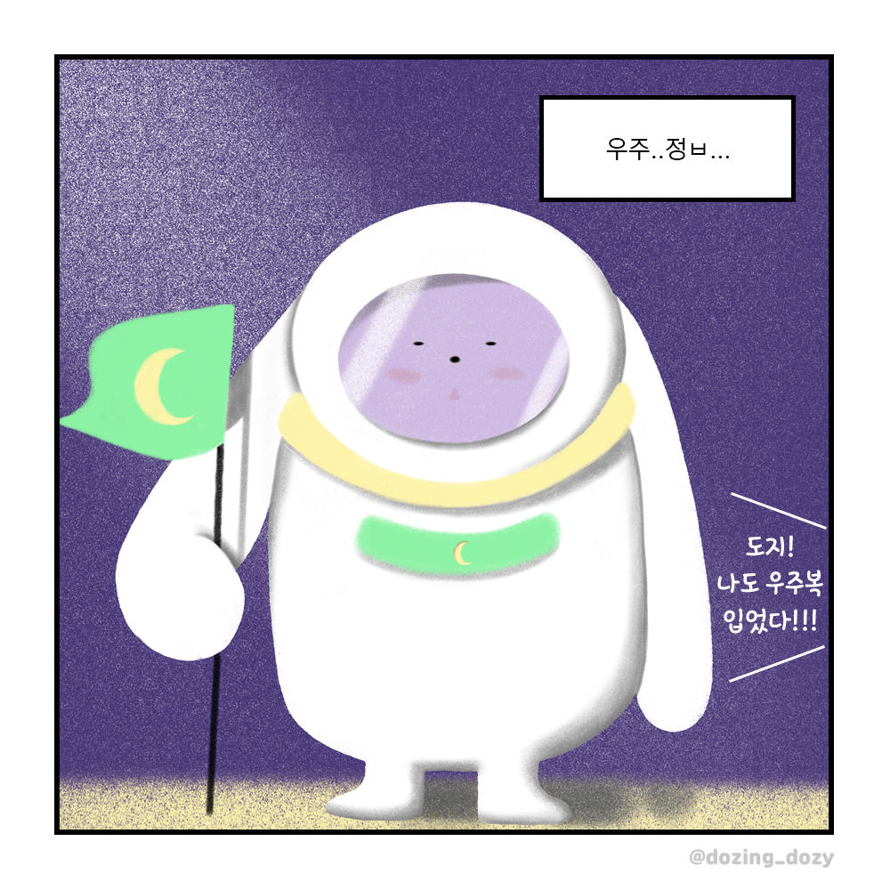
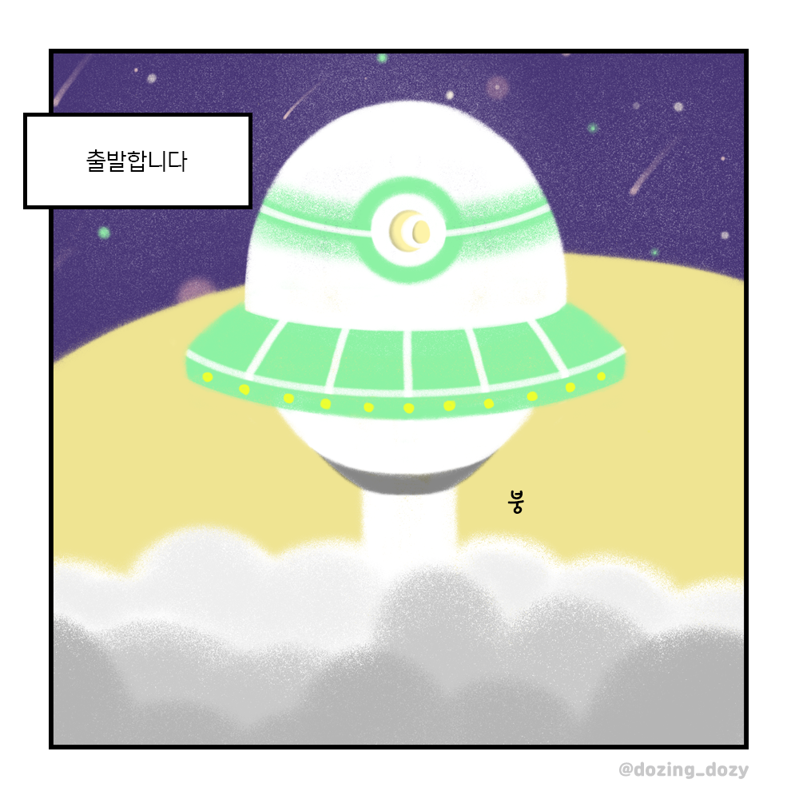
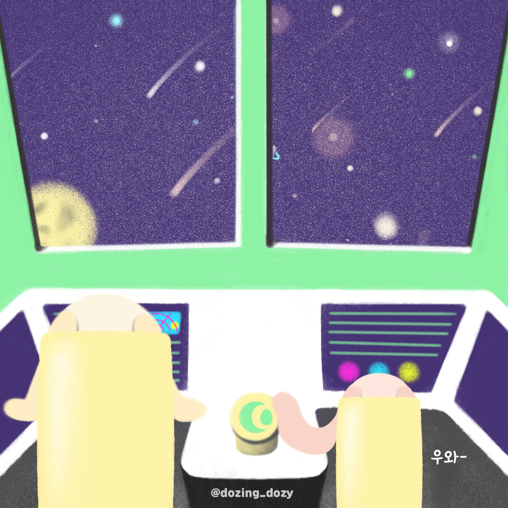

도지, 세상에 나오다


도지의 탄생

이름: 도지 (Dozy)
종: 달토끼
생일: 만복년 11월 13일
꿈: 우주 정복하기
취미: 졸기, 멍하게 있기, 물고기 잡기
특기: 잠 재우기, 우주선 조정
"내 꿈은 우주복이 아니라 우주정복이었어..!"
"... 그럼 내가.. 지구인들을 도와줄게..."
"네가 잘 잘 수 있다면... 난 충분해"
"그럼 난.. 잘게..!"

이름: 코지 (Cozy)
종: 달토끼
생일: 복만년 11월 13일
꿈: 도지의 절친
취미: 졸기, 우주 감상하기, 도지 쫓아다니기
특기: 잠 재우기, 도지에게 말 걸기
"도지!! 나도 우주복 입었다!!!"
"우리가 도와주자 도지, 우리 도움이 필요해보여"
"네가 행복하면 됐지, 뭐!"
"도지 같이 가!!!"
도지의 세계관
우주 정복을 꿈꾸던 도지는 드디어 우주선을 타고 은하수로 떠나게 됩니다.




도지 겟하기!